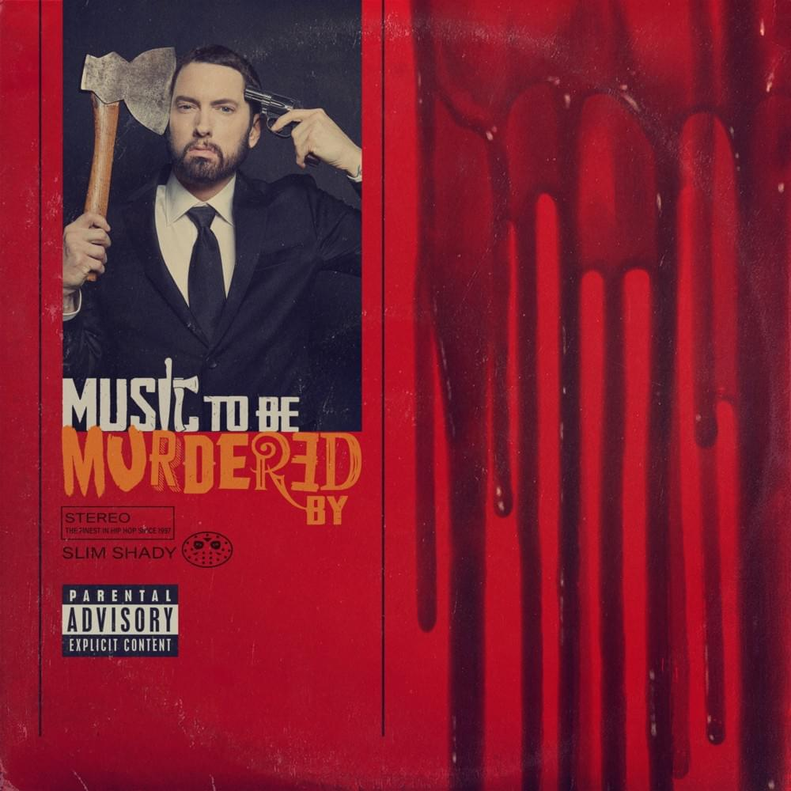

Joureney To College
Best Tracks
 Native is the third studio album by American rock band OneRepublic.
The most successful single was the second single "Counting Stars",
which peaked at number two on the Billboard Hot 100,
becoming their highest-charting hit since "Apologize" also peaked there in 2007.The most successful single was the
second single "Counting Stars", which peaked at number two on the Billboard Hot 100, becoming their highest-charting hit since
"Apologize" also peaked there in 2007.[3] It has also become their biggest hit in the United Kingdom—it
topped the charts there for two non-consecutive weeks[4]—and has charted within the top ten in nine countries
Native is the third studio album by American rock band OneRepublic.
The most successful single was the second single "Counting Stars",
which peaked at number two on the Billboard Hot 100,
becoming their highest-charting hit since "Apologize" also peaked there in 2007.The most successful single was the
second single "Counting Stars", which peaked at number two on the Billboard Hot 100, becoming their highest-charting hit since
"Apologize" also peaked there in 2007.[3] It has also become their biggest hit in the United Kingdom—it
topped the charts there for two non-consecutive weeks[4]—and has charted within the top ten in nine countries
Night Visions is the debut studio album by American pop rock band Imagine Dragons. It was released on September 4, 2012, through Kidinakorner and Interscope Records.The album received generally mixed reviews from music critics upon release. However, it debuted at number two on the Billboard 200 in the United States, selling more than 83,000 copies within its first week where it has since been certified double Platinum.
3 is the third studio album released by Irish pop rock trio, The Script. The album was released in Ireland on 7 September 2012,[2] in the United Kingdom on 10 September and in the United States on 9 October.[3] The album was preceded by the release of the single "Hall of Fame", a duet with Danny O'Donoghue's co-judge on The Voice UK, will.i.am. The album opened at #2 in the United Kingdom, and #13 in the United States, selling 24,002 copies.
 V (Roman numeral for five)[3] is the fifth studio album by American band Maroon 5. The album was released on August 29, 2014, through 222
and Interscope Records. V was Maroon 5's first album to be released through Interscope after the band's previous label, A&M Octone Records,
transferred them along with most of its artists to Interscope. The album also saw the return of keyboardist/rhythm guitarist/backing vocalist
Jesse Carmichael, after his absence from recording, touring and promoting, Overexposed in 2012. It debuted at number one on the US Billboard
200 and produced with three hit singles, "Maps", "Animals", and "Sugar", peaking at numbers 6, 3 and 2 on the US Billboard Hot 100
>
V (Roman numeral for five)[3] is the fifth studio album by American band Maroon 5. The album was released on August 29, 2014, through 222
and Interscope Records. V was Maroon 5's first album to be released through Interscope after the band's previous label, A&M Octone Records,
transferred them along with most of its artists to Interscope. The album also saw the return of keyboardist/rhythm guitarist/backing vocalist
Jesse Carmichael, after his absence from recording, touring and promoting, Overexposed in 2012. It debuted at number one on the US Billboard
200 and produced with three hit singles, "Maps", "Animals", and "Sugar", peaking at numbers 6, 3 and 2 on the US Billboard Hot 100
>
 21 is the second studio album by English singer-songwriter Adele. It was released on 24 January 2011[1] in Europe and on 22 February
2011 in North America by XL Recordings and Columbia Records. The album was named after the age of the singer during its production.
21 shares the folk and Motown soul influences of her 2008 debut album 19, but was further inspired by the American country and
Southern blues music to which she had been exposed during the North American leg of her 2008–09 tour An Evening with Adele.
Composed in the aftermath of the singer's separation from her then partner, the album typifies the near dormant tradition of the
confessional singer-songwriter in its exploration of heartbreak, introspection, and forgiveness.
21 is the second studio album by English singer-songwriter Adele. It was released on 24 January 2011[1] in Europe and on 22 February
2011 in North America by XL Recordings and Columbia Records. The album was named after the age of the singer during its production.
21 shares the folk and Motown soul influences of her 2008 debut album 19, but was further inspired by the American country and
Southern blues music to which she had been exposed during the North American leg of her 2008–09 tour An Evening with Adele.
Composed in the aftermath of the singer's separation from her then partner, the album typifies the near dormant tradition of the
confessional singer-songwriter in its exploration of heartbreak, introspection, and forgiveness.
 Music to Be Murdered By is the eleventh studio album by American rapper Eminem. It was released on January 17, 2020, by Aftermath Entertainment, Interscope Records and Shady Records. It was released with no prior announcement, in a similar fashion to his previous studio album Kamikaze (2018). The album was produced by Eminem and Dr. Dre, amongst other producers. It features guest appearances from Young M.A, Royce da 5'9", White Gold, Ed Sheeran, the late Juice Wrld, Skylar Grey, Black Thought, Q-Tip, Denaun, Anderson .Paak, Don Toliver, Kxng Crooked and Joell Ortiz.